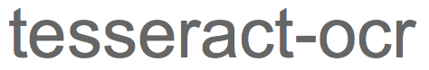

GeoDeepDive
Project Overview
The primary focus of this U.S. National Science Foundation EarthCube building block project is the construction of a cyberinfrastructure that is capable of supporting end-to-end text and data mining (TDM) and knowledge base creation/augmentation activities in the geosciences. The infrastructure includes the following key components:
- Automated, rate-controlled and authenticated original document fetching
- Secure original document storage and bibliographic/source metadata management
- Automated pre-processing of documents by multiple software tools; ability to quickly deploy new tools/versions of tools across all documents
- API for basic full-text search and discovery capabilities
- Ability to pre-index documents on the basis of external dictionaries
- Ability to generate documented, bibliographically complete testing and development datasets based on user-supplied terms
- Supporting the at-scale deployment of tested user-developed TDM applications, with on-demand updates as new relevant documents are acquired
Available TDM Data Products
Natural language analysis tools from Stanford CoreNLP:
Tesseract optical character recognition and parsing:
Cuneiform optical character recognition and parsing.
Custom font and layout recognition scripts.
We have the ability to rapidly ryn new tools and versions of tools against the entire TDM library as they become available.
Infrastructure Schematic Overview